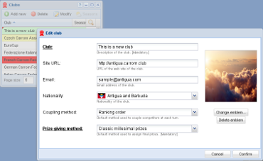

Insert, delete and modify¶

Editing a record¶
To the left of the menu at the top there are the following buttons:
- Add new
Adds a new record, opening a insertion window.
- Delete
Removes the selected record
- Modify
Open a modify window on the selected record
The latter action is also triggered with a double click on any of the records.
The actual edits happen in another window that shows only the fields that may be changed: below the form there are two buttons, Cancel and Confirm and the latter is active only when the changes are correctly validated.
All these operations do not cause an immediate change in the database: the grid shows edited records with a yellow background, new ones in green and removed ones in red. A little red triangle appears in the top left corner of edited fields. At this point the two actions near the top right corner of the window, Confirm and Restore, get enabled and respectively let you confirm all the changes or to forget them, reloading records from the database.
Warning
Reloading the grid, or moving to a different page with the navigation bar, will cancel all not yet confirmed changes made so far!